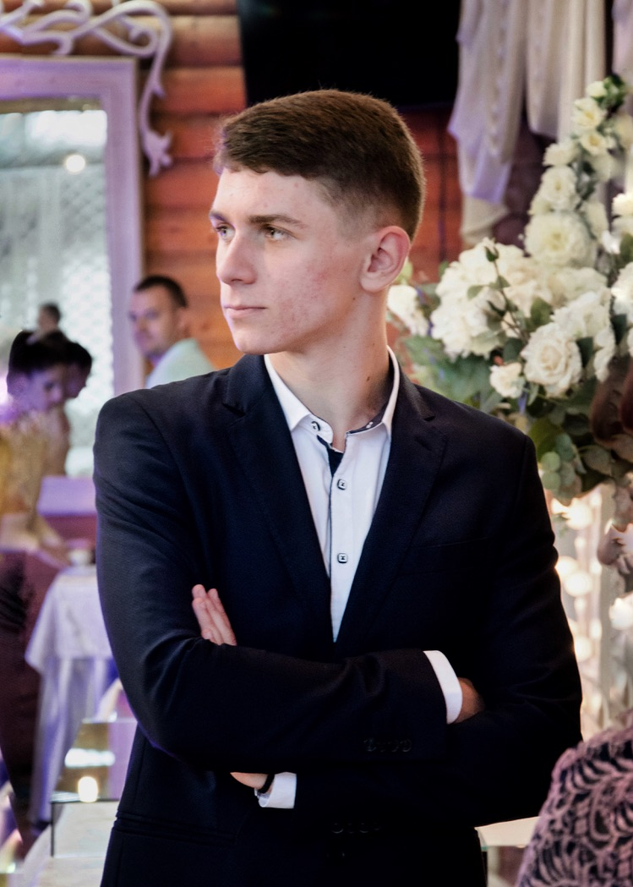

<ion-header [translucent]="true">
  <ion-toolbar>
    <ion-title>Мій профіль</ion-title>
    <ion-buttons slot="primary">
      <ion-button routerLink="settings">
        <ion-icon slot="icon-only" name="settings-outline"></ion-icon>
      </ion-button>
    </ion-buttons>
  </ion-toolbar>
</ion-header>

<ion-content [fullscreen]="true">

  <div class="card">
    <div class="header">
      <div class="avatar">
        
      </div>
    </div>
    <div class="card-body">
      <div class="user-meta ion-text-center">
        <h3 class="playername">Дмитро Литвинюк</h3>
        <h5 class="country">Кам'янець-Подільський</h5>
        <h6 class="ranking">Рейтинг користувача: <ion-chip>
            <ion-label>149</ion-label>
          </ion-chip>
        </h6>
      </div>
      <ion-button expand="full" color="primary">http://dmytrolytvyniuk.com</ion-button>
      <ion-button expand="full" color="secondary">@DmytroLytvyniuk on Twitter</ion-button>
      <ion-button expand="full" color="secondary">View profile at Facebook</ion-button>
    </div>
  </div>
</ion-content>
